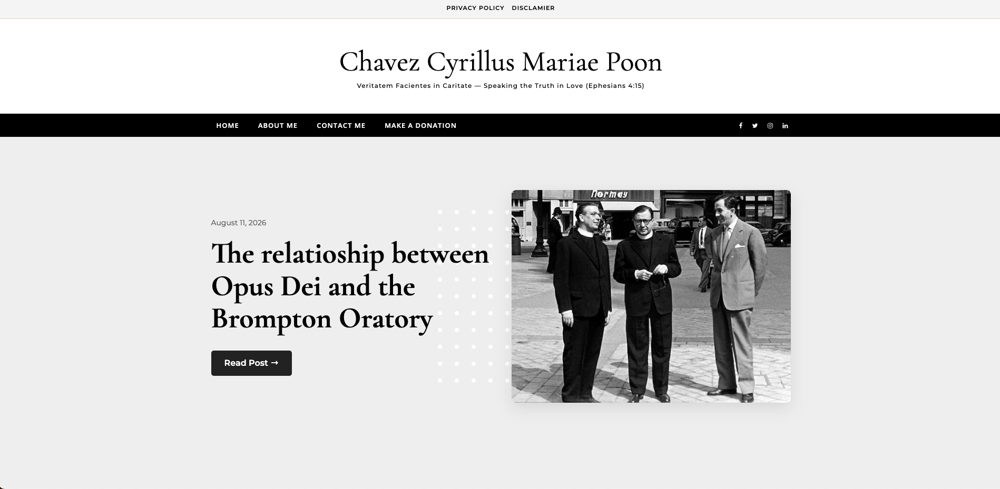

London Stops to Watch the Corpus Christi Procession
Filming of the annual Corpus Christi Procession in London for EWTN Great Britain on June 2026.
Just a humble and unworthy servant for the Roman Catholic Church in whatever the way which God may call me.

I'm a young Traditionalist Roman Catholic in full communion with the Holy See. Born and raised in Hong Kong, I'm now resides in Walsingham, Norfolk, in the United Kingdom, one of England’s foremost places of pilgrimage and affectionately known as “England’s Nazareth”.
I am a freelance independent writer, journalist, and social media content creator with a particular interest in the sacred liturgy, the historic traditions of the Roman Catholic Church, ecclesiastical history, and contemporary Roman Catholic affairs.
Alongside my Catholic media and content creation work, I have more than 10 years of ceremonial and liturgical experience, having served as an Acolyte, Sacristan and Liturgical Master of Ceremonies at Holy Mass and other sacred liturgical celebrations in various parishes and ecclesiastical communities throughout Hong Kong, Macau and the United Kingdom. His particular interests include the Roman Rite in both its Ordinary and Extraordinary Forms, the Ambrosian Rite, liturgical history, sacred ceremonial, and ecclesiastical heraldry.
Besides my work in Catholic ministry, I am a freelance website designer and developer with more than 5 years of experience. I have designed and maintained websites for personal projects, blogs, and Catholic initiatives using platforms such as WordPress, DokuWiki, Jekyll, and HTML/CSS. He focuses on creating visually appealing, easy-to-navigate sites with clear presentation, reliability, and accessibility, combining thoughtful design with practical functionality to help individuals and organisations communicate their mission effectively.
“Veritatem Facientes in Caritate”
-- Speaking the Truth in Love (Ephesians 4:15)
Having been volunteered with EWTN Great Britain since June 2026, I have been involved in videography, writing, editing and interviewing for various Catholic events in UK.
Served as an Acolyte and Master of Ceremonies at Pilgrim Holy Masses, monthly parish Adoration, and other various parish liturgical ceremonies and events, assisting with the preparation, coordination, and smooth running of liturgical celebrations and ensuring that ceremonies were conducted reverently and according to the appropriate liturgical practices.
Also served as Interim Sacristan when the regular Parish Sacristan was unavailable. Assisting with the maintenance and organization of the sacristy and ensuring that all liturgical materials were properly stored and available for use.
Participated in the EWTN's Summer Academy from 22nd of June to 1st of July 2026 in Rome, Italy, working together with the EWTN Vatican team members and other 43 people from around the world. The participants were trained specially in journalism, content creation, media production and storytelling.
Assisted in the organization, coordination, and management of pilgrimage events, while providing administrative and pastoral support to the Shrine’s Mass and Pilgrimage Office at the Basilica and National Shrine of Our Lady of Walsingham.
Helped to ensure the smooth running and operation of the pilgrim activities, liturgical celebrations, and other events hosted by the Shrine.

Filming of the annual Corpus Christi Procession in London for EWTN Great Britain on June 2026.

Design my main personal website and blog "www.chavezpoon.com" using WordPress.

Wrote an article about my experience at the 2026 EWTN Summer Academy in Rome.

Interviewing and reporting on the Marian Symposium Conference and Day with Mary 2026 in London.

Interviewing and filming at the WeBelieve Festival 2026 in St. Mary's College in Oscott, Birmingham.
Presenting and editing the Papal General Audience report for LookLive Practical Assignment during the EWTN Summer Academy 2026.
Filming and editing for the final project of EWTN Summer Academy 2026 on the topic of the women choose veiling in the church.
Transform your idea into a personal online presence with our custom website designs.
Transform your small business into a stunning online shop with WordPress and eCommerce.
If you have any questions or would like to discuss a project, feel free to send me a message through E-Mail or WhatsApp, or you can even DM me in one of the social media platforms.
You can also use the below to drop down any prayer requests, questions, suggestions, project ideas and many more!
Welcome to Chavez Poon's Personal Website
1%Your local time